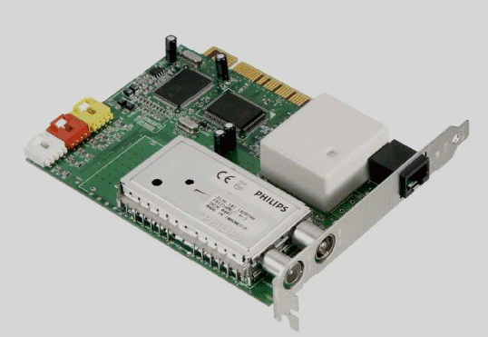
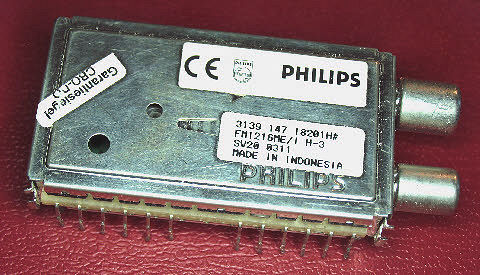
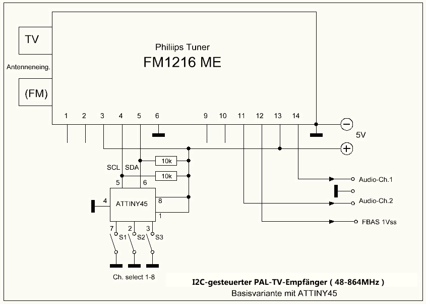

und Bascom-I2C-Steuerung
NEU: Empfang von Analog-TV und FM-Audio im Bereich 48-865MHz
LETZTE
ERWEITERUNG: 27.
Februar
2013
Als
Restposten gibt es bei Fa. Pollin für schlaffe Euro 3.95 eine
"TV-/Radio- und ISDN-Kombokarte" [1] ( Best.-Nr. 700 621 ). Sie wird
dadurch interessant, dass auf ihr ein PHILIPS-Tuner des Typs "FM1216ME"
[2] verbaut ist. Ursprünglich als Schlüsselbauteil für (
analoge ) TV- und Radio-Empfänger entwickelt, bleibt nach dem Ende
des analogen Fernsehens aber immer noch seine Verwendbarkeit zum
Selbstbau
eines relativ hochwertigen FM-Stereoempfängers.
Ist kein optimal dafür geeignetes Werkzeug vorhanden, so sollte man allerdings auf ein komplettes Auslöten des Tuners verzichten und stattdessen die einzelnen Tuner-Anschlußpins kurz oberhalb der Platinenfläche abkneifen. Das Aushebeln über die vier verbleibenden Massekontakte sollte danach mithilfe eines kräftigen Lötkolbens keine weiteren Probleme bereiten.
.
Ist kein optimal dafür geeignetes Werkzeug vorhanden, so sollte man allerdings auf ein komplettes Auslöten des Tuners verzichten und stattdessen die einzelnen Tuner-Anschlußpins kurz oberhalb der Platinenfläche abkneifen. Das Aushebeln über die vier verbleibenden Massekontakte sollte danach mithilfe eines kräftigen Lötkolbens keine weiteren Probleme bereiten.
.
Abb.1 Komboplatine von Fa. Pollin

Abb.2 Philips Tuner FM1216ME

Abb.3 Blockschaltbild des Tuners "FM1216ME"
Der Tuner "FM1216ME"
benötigt nur eine 5V-Versorgungsspannung ( ca. 100mA ) und erlaubt
dabei eine vielseitige Verwendung, wovon aber inzwischen eigentlich nur
noch die Verwendung als FM-Rundfunkempfänger von Interesse ist.
Dabei kann er entweder ein Mono- oder unterstützt vom internen
Decoder auch ein Stereo-Signal bereitstellen. Zur Weiterverarbeitung
kann z.B. eine Aktivbox verwendet werden. Über einen
zusätzlich verfügbaren MPX-Ausgang ( Pin 14 ) lässt sich
bei Bedarf
auch noch z.B. ein RDS-Decoder anschliessen.

Abb.4 Minimalversion einer FM-Radio-Tunersteuerung mit Prozessor ATTINY45
Die
I2C-Tunersteuerung erfolgt über seine Pins 4 ( SCL ) und 5 ( SDA
). Zum Empfang meines Lieblingssenders habe ich dabei eine
Minimalversion der Steuersoftware mit dem Prozessor ATTINY45 ( Abb.4 )
getestet. Nach Programmstart wird hierbei immer die dazu im
Programm abgelegte Frequenz
aufgerufen. Mithilfe der Up- und Down-Tasten lässt sich diese zwar
in jeweils 100KHz-Schritten ändern, aber ohne Frequenzanzeige ist
diese Lösung zum Empfang auch anderer Sender natürlich wenig
elegant. Daher habe ich die Software jetzt ( im Mai 2012 ) noch
dahingehend erweitert, dass parallel zu den I2C-Anschlüssen SCL
und SDA auch noch ein Standard-LCD-Modul angesteuert werden kann. Dabei
wird zusätzlich noch ein mit dem IC PCF8574P aufgebauter I2C- zu
LCD-Adapter benötigt ( Abb.5 ). Einen an dieser Stelle geeigneten
Bausatz
gibt es für wenige Euros z.B hier [3]. Vom gleichen
Lieferanten sind auch passende LCD-Displays erhältlich [4]. Obwohl
die Steuerplatine vorzugsweise für 2x16 Zeichen-Displays ausgelegt
ist, sollten an dieser Stelle auch 1x16-Zeichen-Versionen verwendbar
sein. Zu beachten ist noch, dass die auf der Zusatzplatine befindliche
Brücken entsprechend einer I2C-Adresse 40hex gesetzt werden
müssen.
Nachdem die Hintergrundbeleuchtung des LC-Displays ein kleiner zusätzlicher Stromfresser ist, wurde noch die Möglichkeit geschaffen, sie durch Masseverbindung von Port B2 ( Pin7 ) des ATTINY45 auch ausschalten zu können.
Wird alternativ zum ATTINY45 ein ATMEGA8-Prozessor verwendet, so ermöglicht das den direkten Anschluss eines zusätzlichen LC-Displays ( 1x16Z oder 2x16Z ), womit die Anzeige der jeweiligen Empfangsfrequenz auf einfache Weise realisierbar ist. Die zu den besprochenen Einsatzvarianten gehörenden Softwareversionen sind weiter unten auf dieser Seite verfügbar und können natürlich auch noch leicht an eigene Anforderungen angepasst werden.
Als Besonderheit ist noch anzumerken, daß es gemäß Herstellerangaben erforderlich ist, die PLL des Tuners nach dem Einschalten und vor dem Setzen der später gewünschten UKW-Empfangsfrequenzen immer erst einmal kurzzeitig auf eine relativ hohe TV-Frequenz z.B. im Bereich um 150MHz abzustimmen. In den beigefügten Programmen wurde das bereits berücksichtigt.
Im vorliegenden Fall wird die PLL des Tuners im 50KHz-Raster betrieben. Dabei berechnet sich der via I2C-Steuerung zum Empfang einer bestimmten Frequenz "Fe" einzugebende Teilungsfaktor zu ( Fe+ 10.7 ) * 20. Eine Frequenz von beispielsweise 103.7 MHz ergibt somit: ( 103.7 + 10.7 ) * 20 = 2288 als Dezimalwert bzw. 8F0 als der in die entsprechenden Sendebytes zu schreibende Hex-Wert.
Im Testprogramm ist der mithilfe der Up/Down-Tasten abdeckbare Empfangsbereich auf 87.5-107.9 MHz begrenzt. Grundsätzlich erlaubt der Tuner aber auch eine Verwendung über diese Grenzen hinaus. So hätte man in früheren Zeiten z.B. den TV-Ton von CCIR-Kanal 4-Stationen auf 67.75 MHz abhören können, aber alle entsprechenden Sender sind inzwischen verstummt. Ein Radio-DXer könnte aber auf diese Weise aber aber immer noch versuchen, Empfangsversuche im jenseits von Polen durchaus noch verwendeten OIRT-Rundfunkband 68-74 MHz durchzuführen .
Weiterhin ist natürlich auch eine Verwendung des Tuners als analoger TV-Empfangsteil möglich. Nachdem die terrestrische Ausstrahlung entsprechender Signale aber fast überall beendet wurde, besteht eine Möglichkeit zur Nutzung dieser Betriebart allenfalls noch in Verbindung mit Signalen aus den Kabelnetzen oder im Rahmen des Amateurfernsehens ( ATV ). Hier lässt sich der "FM1216ME" nach wie vor als Direktempfänger für das 70cm-Band oder auch als Nachsetzer für Mikrowellenconverter einsetzen.
Im FM-Mode arbeitet der Tuner "FM1216" standardmäig im Low-Band-Mode, was bedeutet, dass alle Frequenzen zwischen etwa 48 und 160 MHz durch Eingabe der entsprechenden Frequenzbefehle direkt anwählbar sind, wobei das auch den eigentlichen UKW-Rundfunkbereich einschliesst. Soll auf höheren Frequenzen im FM-Mode gearbeitet werden, so ist das entsprechende Band-Modul per Softwarebefehl aufzurufen.

Über die Ports B2-B4 des ATTINY 45 ( Pin 7, 2, 3, ) bzw. Schalter S1-S3 lassen sich bis zu 8 im Programmcode fest abgelegte Fernsehkanäle anwählen. Als Schalter empfiehlt sich ein kleiner binär codierter Drehschalter mit 10 oder 16 Stellungen.
Ein BASCOM-Mustercode für Fernsehempfang im PAL B/G-Mode ( Tonträgerabstand: 5.5 MHz * ) ist unten herunterladbar. Die im beispielhaften BAS-File enthaltenen Frequenzdaten für die max. möglichen 8 Kanäle lassen sich entsprechend eigener Wünsche ändern.
* Durch Änderung von Steuerbits sind auch Bild/Tonträgerabstände von 6.0 MHz und 6.5 MHz möglich.
Gegenüber der in Abb.4 für den FM-Rundfunk realisierten Version ergeben sich hierzu folgende Änderungen:
Die variable Abstimmspannung ist an Eingang PB4 ( Pin3 ) des Prozessors zu legen. Über die Ports PB2 ( Pin7 ) und PB3 ( Pin2 ) kann ggf. zwischen MONO- ( offen ) und STEREO-Empfang ( an Masse ) gewählt werden. Voraussetzung für Stereo-Empfang ist allerdings, dass die Sendeseite die gleiche Norm verwendet, wie wir sie vom FM-Rundfunk kennen.
Die zugehörigen BASCOM-Quellcodes lassen sich weiter unten herunterladen.
Nachdem die Hintergrundbeleuchtung des LC-Displays ein kleiner zusätzlicher Stromfresser ist, wurde noch die Möglichkeit geschaffen, sie durch Masseverbindung von Port B2 ( Pin7 ) des ATTINY45 auch ausschalten zu können.
{kind=link}
Abb.5 Zusammenschaltung mit
Pollin-Board und LCD ( Click für Grossdarstellung )
Wird alternativ zum ATTINY45 ein ATMEGA8-Prozessor verwendet, so ermöglicht das den direkten Anschluss eines zusätzlichen LC-Displays ( 1x16Z oder 2x16Z ), womit die Anzeige der jeweiligen Empfangsfrequenz auf einfache Weise realisierbar ist. Die zu den besprochenen Einsatzvarianten gehörenden Softwareversionen sind weiter unten auf dieser Seite verfügbar und können natürlich auch noch leicht an eigene Anforderungen angepasst werden.
Als Besonderheit ist noch anzumerken, daß es gemäß Herstellerangaben erforderlich ist, die PLL des Tuners nach dem Einschalten und vor dem Setzen der später gewünschten UKW-Empfangsfrequenzen immer erst einmal kurzzeitig auf eine relativ hohe TV-Frequenz z.B. im Bereich um 150MHz abzustimmen. In den beigefügten Programmen wurde das bereits berücksichtigt.
Im vorliegenden Fall wird die PLL des Tuners im 50KHz-Raster betrieben. Dabei berechnet sich der via I2C-Steuerung zum Empfang einer bestimmten Frequenz "Fe" einzugebende Teilungsfaktor zu ( Fe+ 10.7 ) * 20. Eine Frequenz von beispielsweise 103.7 MHz ergibt somit: ( 103.7 + 10.7 ) * 20 = 2288 als Dezimalwert bzw. 8F0 als der in die entsprechenden Sendebytes zu schreibende Hex-Wert.
Im Testprogramm ist der mithilfe der Up/Down-Tasten abdeckbare Empfangsbereich auf 87.5-107.9 MHz begrenzt. Grundsätzlich erlaubt der Tuner aber auch eine Verwendung über diese Grenzen hinaus. So hätte man in früheren Zeiten z.B. den TV-Ton von CCIR-Kanal 4-Stationen auf 67.75 MHz abhören können, aber alle entsprechenden Sender sind inzwischen verstummt. Ein Radio-DXer könnte aber auf diese Weise aber aber immer noch versuchen, Empfangsversuche im jenseits von Polen durchaus noch verwendeten OIRT-Rundfunkband 68-74 MHz durchzuführen .
EMPFANG
VON ANALOG-TV UND
FM-AUDIO IM FREQUENZBEREICH 48-865MHz
Der Tuner "FM1216ME" deckt einen Frequenzbereich von ca. 48 MHz bis
oberhalb von 863 MHz ab. Dabei
erfolgt eine Aufteilung in die drei Telbereiche: LOW: 48-160MHz;
MID:160-442MHz und HI: 442-863 MHz. Die Bandgrenzen sind allerdings nur
als
Näherungswerte zu betrachten und können in gewissem Umfang
überschritten werden. Interessant ist dabei
auch, dass ( Breitband- ) FM-Empfang nicht nur im UKW-Rundfunkbereich
87.5-108 MHz , sondern im gesamten Tuner-Empfangsbereich realisierbar
ist,
was weitere Einsatzmöglichkeiten erlaubt. Hierzu zählt z.B.
ein Empfang der am oberen Bereichsende zwischen
863-865 MHz ( siehe unten ) angesiedelten drahtlosen
Kopfhörersysteme und
Mikrofone.FM-AUDIO IM FREQUENZBEREICH 48-865MHz
Weiterhin ist natürlich auch eine Verwendung des Tuners als analoger TV-Empfangsteil möglich. Nachdem die terrestrische Ausstrahlung entsprechender Signale aber fast überall beendet wurde, besteht eine Möglichkeit zur Nutzung dieser Betriebart allenfalls noch in Verbindung mit Signalen aus den Kabelnetzen oder im Rahmen des Amateurfernsehens ( ATV ). Hier lässt sich der "FM1216ME" nach wie vor als Direktempfänger für das 70cm-Band oder auch als Nachsetzer für Mikrowellenconverter einsetzen.
Im FM-Mode arbeitet der Tuner "FM1216" standardmäig im Low-Band-Mode, was bedeutet, dass alle Frequenzen zwischen etwa 48 und 160 MHz durch Eingabe der entsprechenden Frequenzbefehle direkt anwählbar sind, wobei das auch den eigentlichen UKW-Rundfunkbereich einschliesst. Soll auf höheren Frequenzen im FM-Mode gearbeitet werden, so ist das entsprechende Band-Modul per Softwarebefehl aufzurufen.

Abb.6 Minimalversion für TV-Analogempfang mit Prozessor ATTINY45
Abb.6 Minimalversion für TV-Analogempfang mit Prozessor ATTINY45
Abb.6 zeigt die Aussenbeschaltung des
Tuners für
den analogen TV-Empfang. An seinem Pin 12 steht ein Videosignal mit
1Vss an 75Ohm zur Verfügung (Abb.7
).
Die Tonausgänge Pin 11 und 14 liefern Signale mit etwa 450mVss,
wobei Verbraucher über Trennkondensatoren angeschlossen werden
sollten.
Abb.7
Pegelverhältnisse am Video-Ausgang des FM1216ME
Über die Ports B2-B4 des ATTINY 45 ( Pin 7, 2, 3, ) bzw. Schalter S1-S3 lassen sich bis zu 8 im Programmcode fest abgelegte Fernsehkanäle anwählen. Als Schalter empfiehlt sich ein kleiner binär codierter Drehschalter mit 10 oder 16 Stellungen.
Ein BASCOM-Mustercode für Fernsehempfang im PAL B/G-Mode ( Tonträgerabstand: 5.5 MHz * ) ist unten herunterladbar. Die im beispielhaften BAS-File enthaltenen Frequenzdaten für die max. möglichen 8 Kanäle lassen sich entsprechend eigener Wünsche ändern.
* Durch Änderung von Steuerbits sind auch Bild/Tonträgerabstände von 6.0 MHz und 6.5 MHz möglich.
FM-EMPFANG IM BEREICH
863-865 MHZ
Der Tuner "FM1216ME" lässt sich auch zum Empfang von Signalen
verwenden, die im Frequenzbereich zwischen
863-865 MHz von den dort angesiedelten drahtlosen
Kopfhörersystemen und
Mikrofonen ausgesandt werden. Um alle hier verfügbaren
Breitband-FM-Aussendungen aufnehemen zu können, genügt ein
125 KHz-Raster, womit sich 14 Empfangskanäle ergeben. Zu
ihrer Abstimmung wurde ein sehr einfaches, m.W. ursprünglich von
Burkhard Kainka vorgeschlagenes Verfahren benutzt: Dabei wird der im
"ATTINY45" integrierte 10Bit-AD-Wandler benutzt, um aus einer
anliegenden Analogspannung zwischen 0V und +5V die zum Kanalaufruf
benötigten numerischen Werte zu generieren. Zur Abstimmung
zwischen 863 und 865 MHz genügt somit ein einfaches Potentiometer,
wobei dessen Schleifer mit dem entsprechenden Analogeingang des
Prozessors zu verbinden ist.Gegenüber der in Abb.4 für den FM-Rundfunk realisierten Version ergeben sich hierzu folgende Änderungen:
Die variable Abstimmspannung ist an Eingang PB4 ( Pin3 ) des Prozessors zu legen. Über die Ports PB2 ( Pin7 ) und PB3 ( Pin2 ) kann ggf. zwischen MONO- ( offen ) und STEREO-Empfang ( an Masse ) gewählt werden. Voraussetzung für Stereo-Empfang ist allerdings, dass die Sendeseite die gleiche Norm verwendet, wie wir sie vom FM-Rundfunk kennen.
Die zugehörigen BASCOM-Quellcodes lassen sich weiter unten herunterladen.
NACHBAU
Die
BASCOM-AVR-Files für die FM-Radio-Versionen können hier
heruntergeladen werden:
* FM-Radio Version für Prozessor ATTINY45 ohne Display
* FM-Radio Version für Prozessor ATTINY45 für Frequenzanzeige über LC-Display ( benötigt Zusatzboard mit PCF8574P )
* FM-Radio Version für Prozessor ATMEGA8 für Frequenzanzeige über LC-Display
Das BASCOM-AVR-File für die 863-865MHz-Version kann hier heruntergeladen werden:
Das BASCOM-AVR-File für die TV-Version kann hier heruntergeladen werden:
* TV-Version für Prozessor ATTINY45 8 Kanäle mit BCD-Schalter S1-S3
Anm.: Vermutlich erlaubt der relativ geringe Umfang der erstellten BASCOM-Programme auch eine Kompilierung unter Verwendung der im Internet kostenlos herunterladbaren Demo-Version [5].
Was die TV-Version betrifft, so bin ich nach Zusendung einer entsprechenden Frequenzliste aber auch gern bereit, ein anwenderspezifisches HEX-File zu erstellen oder nach vorheriger Absprache auch ggf. einen entsprechend programmierten ATTINY45 zu liefern.
Um vom BASCOM-Kompiler erzeugte HEX- oder BIN-Files in den Flash-Bereich der ATMEGA- und ATTINY-Processoren übertragen zu können, verwende ich einen USB-ICSP-Programmierstick nach [7]. Über die Downloadseite der gleichen Firma kann auch eine dazu passende Windows-Software heruntergeladen werden [8].

* FM-Radio Version für Prozessor ATTINY45 ohne Display
* FM-Radio Version für Prozessor ATTINY45 für Frequenzanzeige über LC-Display ( benötigt Zusatzboard mit PCF8574P )
* FM-Radio Version für Prozessor ATMEGA8 für Frequenzanzeige über LC-Display
Das BASCOM-AVR-File für die 863-865MHz-Version kann hier heruntergeladen werden:
Das BASCOM-AVR-File für die TV-Version kann hier heruntergeladen werden:
* TV-Version für Prozessor ATTINY45 8 Kanäle mit BCD-Schalter S1-S3
Anm.: Vermutlich erlaubt der relativ geringe Umfang der erstellten BASCOM-Programme auch eine Kompilierung unter Verwendung der im Internet kostenlos herunterladbaren Demo-Version [5].
Was die TV-Version betrifft, so bin ich nach Zusendung einer entsprechenden Frequenzliste aber auch gern bereit, ein anwenderspezifisches HEX-File zu erstellen oder nach vorheriger Absprache auch ggf. einen entsprechend programmierten ATTINY45 zu liefern.
PROGRAMMIERUNG
Um vom BASCOM-Kompiler erzeugte HEX- oder BIN-Files in den Flash-Bereich der ATMEGA- und ATTINY-Processoren übertragen zu können, verwende ich einen USB-ICSP-Programmierstick nach [7]. Über die Downloadseite der gleichen Firma kann auch eine dazu passende Windows-Software heruntergeladen werden [8].
Abb.8
ICSP-Programmieradapter
Für
ATTINY-Prozessoren wurde ein
kleiner Adapter gem. Abb.8 aufgebaut. Er besteht im Wesentlichen nur
aus einem 6pol. Wannenstecker
und einer 8pol. DIL-IC-Fassung. Nach seiner Verbindung mit dem
Progammierstick kann er zur ICSP-Programmierung eines in
die DIL-Fassung gesteckten Microcontrollers benutzt werden.
LINKS
[1] http://www.pollin.de/shop/dt/ODczOTkyOTk-/Computer_und_Zubehoer/Hardware/Erweiterungskarten/TV_Radio_und_ISDN_Kombokarte.html
[2] http://www.loharens.de/fm1216me/FM1216ME_MK3.pdf ( Datenblatt Tuner FM1216ME )
[2] http://www.loharens.de/fm1216me/FM1216ME_MK3.pdf ( Datenblatt Tuner FM1216ME )
[3] http://www.pollin.de/shop/dt/NDU4OTgxOTk-/Bausaetze_Module/Bausaetze/LCD_I2C_Modul.html
[4] http://www.pollin.de/shop/dt/ODc1OTc4OTk-/Bauelemente_Bauteile/Aktive_Bauelemente/Displays/LCD_Modul_TC1602A_08.html
[5] http://www.mcselec.com/index.php?option=com_docman&task=cat_view&gid=99&Itemid=54
[6] http://www.nxp.com/documents/data_sheet/TDA9887.pdf ( Datenblatt ZF-IC TDA9887 )
[7] http://shop.myavr.de/index.php?sp=article.sp.php&artID=200006
[8] http://shop.myavr.de/index.php?sp=download.sp.php
[9] http://www.loharens.de/fm1216me/FQ1200MK3%20application%20note%201_0.pdf ( Application Note FQ1200MK3-Tuner Serie )
[10] http://www.loharens.de/fm1216me/tda7040.pdf ( Datenblatt Stereo-Decoder TDA7040 )
[11] http://www.loharens.de/fm1216me/TSA5523M_1.pdf ( Datenblatt PLL TSA5523M )
Auf diese Seite führende LINKS sind auch im interessanten LABORTAGEBUCH von Burkhard Kainka zu finden:
http://www.elektronik-labor.de/Labortagebuch/Labortagebuch.html
http://www.elektronik-labor.de/Labortagebuch/Tagebuch0213.html#fm ( Direktlink )
[4] http://www.pollin.de/shop/dt/ODc1OTc4OTk-/Bauelemente_Bauteile/Aktive_Bauelemente/Displays/LCD_Modul_TC1602A_08.html
[5] http://www.mcselec.com/index.php?option=com_docman&task=cat_view&gid=99&Itemid=54
[6] http://www.nxp.com/documents/data_sheet/TDA9887.pdf ( Datenblatt ZF-IC TDA9887 )
[7] http://shop.myavr.de/index.php?sp=article.sp.php&artID=200006
[8] http://shop.myavr.de/index.php?sp=download.sp.php
[9] http://www.loharens.de/fm1216me/FQ1200MK3%20application%20note%201_0.pdf ( Application Note FQ1200MK3-Tuner Serie )
[10] http://www.loharens.de/fm1216me/tda7040.pdf ( Datenblatt Stereo-Decoder TDA7040 )
[11] http://www.loharens.de/fm1216me/TSA5523M_1.pdf ( Datenblatt PLL TSA5523M )
Auf diese Seite führende LINKS sind auch im interessanten LABORTAGEBUCH von Burkhard Kainka zu finden:
http://www.elektronik-labor.de/Labortagebuch/Labortagebuch.html
http://www.elektronik-labor.de/Labortagebuch/Tagebuch0213.html#fm ( Direktlink )